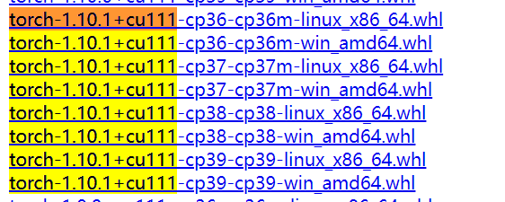
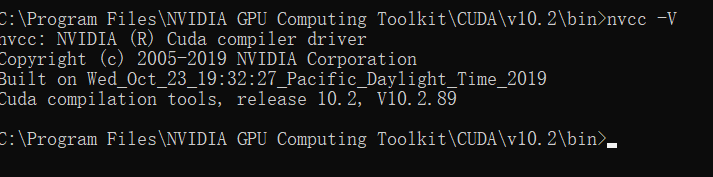

1.4 环境配置之CUDA&cuDNN
有了python环境，有了开发环境，下面马上到主角登场。PyTorch登场前，针对GPU版，还需要额外安装一些东西。
从1.1我们知道PyTorch的安装可根据设备类型分为GPU版或CPU版。
CPU
对于CPU版本直接通过pip或者anaconda命令安装即可，如：
>>> pip3 install torch torchvision torchaudio
具体的命令可查阅：https://pytorch.org/get-started/locally/
官网上给出的命令其实安装了3个包，分别是torch, torchvision,torchaudio，这命令会根据当前系统自动选择对应python版本的whl进行安装，不需要用户操心。但，如果网速不好，或者需要离线安装，这时可以考虑下载whl包然后自行安装，下载whl的链接：https://download.pytorch.org/whl/torch/
pytorch与torchvision版本匹配
若是手动下载的whl，需要注意pytorch与torchvision之间版本对应关系，这个可以到torchvision Github查看，这点非常重要，CV中一些报错就是因为torchvision与pytorch版本不匹配导致的。这里就copy过来，大家参考好了。
torch |
torchvision |
python |
|---|---|---|
main / nightly |
main / nightly |
>=3.6, <=3.9 |
1.10.0 |
0.11.1 |
>=3.6, <=3.9 |
1.9.1 |
0.10.1 |
>=3.6, <=3.9 |
1.9.0 |
0.10.0 |
>=3.6, <=3.9 |
1.8.2 |
0.9.2 |
>=3.6, <=3.9 |
1.8.1 |
0.9.1 |
>=3.6, <=3.9 |
1.8.0 |
0.9.0 |
>=3.6, <=3.9 |
1.7.1 |
0.8.2 |
>=3.6, <=3.9 |
1.7.0 |
0.8.1 |
>=3.6, <=3.8 |
1.7.0 |
0.8.0 |
>=3.6, <=3.8 |
1.6.0 |
0.7.0 |
>=3.6, <=3.8 |
1.5.1 |
0.6.1 |
>=3.5, <=3.8 |
1.5.0 |
0.6.0 |
>=3.5, <=3.8 |
1.4.0 |
0.5.0 |
==2.7, >=3.5, <=3.8 |
1.3.1 |
0.4.2 |
==2.7, >=3.5, <=3.7 |
1.3.0 |
0.4.1 |
==2.7, >=3.5, <=3.7 |
1.2.0 |
0.4.0 |
==2.7, >=3.5, <=3.7 |
1.1.0 |
0.3.0 |
==2.7, >=3.5, <=3.7 |
<=1.0.1 |
0.2.2 |
==2.7, >=3.5, <=3.7 |
举一反三，torchaudio、torchtext同理。
GPU版本
深度学习能火，正式因为有了强大的GPU支撑，自然地，绝大多数情况下我们会安装GPU版本的pytorch。目前PyTorch不仅支持NVIDIA的GPU，还支持AMD的ROMc的GPU。不过我们还是以N卡为例，毕竟N卡还是主流，A卡仍需努力。
对于N卡，什么型号是pytorch支持的呢？首先，需要计算能力（compute capability）≥3.0的GPU。很多地方都会看到计算能力≥3.0，理论出自哪呢？ 我在官方文档里找到了出处文档
It has a CUDA counterpart, that enables you to run your tensor computations on an NVIDIA GPU with compute capability >= 3.0
那么问题来了，怎么知道自己的GPU的copute capability呢？请看NVIDA文档,选择你对应的系列，找到对应型号。
举几个例子：
| GPU | 计算能力 |
|---|---|
| GeForce RTX 2080 | 7.5 |
| GeForce RTX 2070 | 7.5 |
| GeForce RTX 2060 | 7.5 |
| GeForce GTX 1080 | 6.1 |
| GeForce GTX 1070 | 6.1 |
| GeForce GTX 1060 | 6.1 |
其实，只要是近几年购买的N卡都是没有问题的。确定了显卡是支持的，接下来就要决定一个非常重要事情，就是选中对应的CUDA版本进行安装。
CUDA
CUDA(ComputeUnified Device Architecture)，是NVIDIA推出的运算平台。 CUDA是一种由NVIDIA推出的通用并行计算架构，该架构使GPU能够解决复杂的计算问题。
与之配套的是cuDNN, NVIDIA cuDNN是用于深度神经网络的GPU加速库。它强调性能、易用性和低内存开销。NVIDIA cuDNN可以集成到更高级别的机器学习框架中。
细心的朋友在PyTorch官网就能发现， Compute Platform中并不给出显卡型号，而是给出CUDA版本，这就要求我们安装特定版本的CUDA，才能使用特定版本的PyTorch。例如PyTorch 1.10 只支持CUDA 10.2, CUDA 11.3，以及CUDA 11.1。为什么这里用了以及呢？ 因为在官网上并没有显示CUDA 11.1，但是在https://download.pytorch.org/whl/torch，搜索，可以看到11.1的whl。


在这里选择的是10.2版本进行安装，CUDA下载通过官网，官网通常只显示最新版本cuda，这里需要大家进入具体的版本下载界面，拖到底部，找到：
接着可以找到对应的CUDA版本，进入下载即可，这Installer Type 有 exe (network) 和 exe (local)两种选择，我们选local的方式，下载2.6G的cuda_10.2.89_441.22_win10.exe即可。
安装方式十分简单，一直下一步即可，只需要记住安装到了哪里，这里默认路径为
C:\Program Files\NVIDIA GPU Computing Toolkit\CUDA\v10.2
下面来测试一下CUDA安装是否成功，可以打开命令窗，进入C:\Program Files\NVIDIA GPU Computing Toolkit\CUDA\v10.2\bin，然后输入
nvcc -V

cuDNN
有了CUDA平台，还需要安装cuDNN，cuDNN全称为NVIDIA CUDA Deep Neural Network (cuDNN) 。它是一个深度神经网络的加速库，里边实现了神经网络常用的操作，并且是高度优化的，可以极大地榨干NVIDA显卡的性能，因此用N卡都会用cuDNN库。
cuDNN库的安装非常简单，与其说是安装，不如说是下载库文件，放到CUDA所在的目录下。具体步骤如下：
登录后，点击Download cuDNN，跳转到下载页面，选择好cudnn版本，操作系统版本，即可开始下载

将下载好的压缩包cudnn-10.2-windows10-x64-v8.2.4.15.zip 解压
分别将bin、include、lib\x64下的文件分别对应拷贝到C:\Program Files\NVIDIA GPU Computing Toolkit\CUDA\v10.2文件夹下的bin、include、lib\x64下
打开命令窗口，在C:\Program Files\NVIDIA GPU Computing Toolkit\CUDA\v10.2\extras\demo_suite文件夹中分别执行bandwidthTest.exe和deviceQuery.exe。观察到Result=PASS即可